User Guides
Welcome to the User Guides for Smart AutoSorter AI Pro.
First-Run Steps & Setup Wizard
When you launch Smart AutoSorter AI Pro for the first time, you are prompted with the Privacy & Data Setup Wizard to configure AI consent. The AI features require a small, one-time 80MB model download from Hugging Face.

You can complete first-run setup using either CLI arguments or TUI keyboard navigation:
Command-Line Interface (CLI) Setup
- Grant AI Consent & Enable Model: Pass the
--accept-ai-consentflag to grant consent and initialize local model downloading:python app/main.py --accept-ai-consent - Decline AI Consent (Offline Non-Semantic Mode): Pass the
--decline-ai-consentflag to opt out of model downloads and run in offline non-semantic sorting mode:python app/main.py --decline-ai-consent - Non-Interactive & Headless Environments: When running in automated scripts or non-interactive environments without an interactive TTY, combine consent flags with
--skip-wizardor--non-interactiveto bypass interactive wizard prompts:python app/main.py --accept-ai-consent --non-interactive
Text User Interface (TUI) Setup
When launching the interactive terminal interface (python app/main.py --tui), the setup wizard modal opens automatically on initial startup:
1. Navigate Controls: Use [Tab] or [Shift+Tab] to move focus between the AI Consent toggle switch and button controls.
2. Toggle Consent: Press [Space] or [Enter] on the switch control to toggle AI consent on or off.
3. Confirm & Save: Use [Tab] to highlight Finish & Save and press [Enter] to confirm your selection and proceed.
Privacy Configurations
Your privacy is our priority.
- Local Processing: If you enable AI features and download the model, all semantic analysis occurs strictly on your machine.
- No External Communication: We never send your files or personal data to any external server.
- Privacy Settings: You can verify or update your AI consent preferences at any time via the TUI Settings modal ([Ctrl+O] or [Ctrl+W] for the setup wizard) or via CLI configuration commands:
python app/main.py config --set AI_CONSENT_GRANTED true
Exclusion List Configuration
You can manage an Exclusion List (stop words) to specify common text terms (e.g., 'the', 'and', 'for') that are ignored during text normalization and AI semantic analysis.
It is important to distinguish stop word text filtering from file extension or filesystem rules:
- Text Filtering: Exclusion list terms remove frequent or generic words from document content before text analysis and clustering take place.
- File Extensions: Stop words do not filter file extensions (e.g., .pdf, .docx) or exclude specific file types from being processed by the application.
To manage your exclusion list:
- Via CLI: Use the config --set command with a comma-separated string of stop words:
python app/main.py config --set STOP_WORDS "word1,word2,word3"
[Tab], type or modify terms in the input fields, and use [Backspace] or [Delete] to edit or remove stop word entries.
Folder Cleanup Options
To keep your output directory organized, you can enable Cleanup Empty Folders. When enabled, the application automatically removes any folders left empty after the sorting or clustering processes are completed.
To configure folder cleanup:
- Via CLI: Set the CLEANUP_EMPTY_FOLDERS configuration option using the CLI command:
python app/main.py config --set CLEANUP_EMPTY_FOLDERS true
false:
python app/main.py config --set CLEANUP_EMPTY_FOLDERS false
[Ctrl+O] to open Application Settings in the interactive terminal interface, press [Tab] to highlight toggle controls, and press [Space] or [Enter] to toggle folder cleanup options.
Background Folder Monitoring
Smart AutoSorter AI Pro provides continuous background directory monitoring to track target folders for real-time file additions and modifications.

Continuous Watchdog Monitoring
When background folder monitoring is active, the system continuously tracks target directories for file events. When new files are added or existing files are modified, background monitoring automatically triggers sorting and reorganization without requiring manual intervention.
Transient File Filtering
To ensure incomplete downloads or temporary working files do not disrupt background operations, the background monitor automatically filters out transient files.
- Filtered Extensions: By default, files with transient extensions such as .crdownload, .tmp, and .download are ignored during background monitoring and file scanning.
- Completion Detection: Files are only processed once temporary download operations are fully complete and the file is finalized on disk.
Debounce Timing & Event Handling
During rapid file creation or continuous file write operations (such as multi-file downloads or bulk file copies), processing every individual file event immediately would cause unnecessary background recalculations. - Standard Debounce Delay: A default delay of 0.6 seconds pauses processing after a file event, waiting briefly to aggregate additional rapid changes. - Maximum Debounce Delay: For continuous write streams, a maximum debounce delay limit of 5.0 seconds guarantees that background recalculations are scheduled once file activity stabilizes, preventing redundant processing while avoiding indefinite delays.
Offline Non-Semantic Mode
This application includes a dedicated offline non-semantic sorting fallback mode. This mode is activated automatically if you decline the model download, if you are completely offline during setup, or if the model is otherwise missing.
How Offline Mode Works
In offline non-semantic mode, the AI clustering features are disabled. Instead, the application processes folders by grouping files based purely on file extensions or basic alphabetical sorting rules, without analyzing the internal text or semantic meaning.
- Files are grouped into generic category folders (e.g., all .txt files into a Text Documents folder).
- No background network connections are attempted.
- Performance is extremely fast as no heavy machine learning computations occur.
System Limits
The following rules and constraints govern how the AI sorts your files:
Supported File Formats
The system currently supports the following file formats for sorting:
- .txt
- .docx
- .csv
- .xlsx
- .xls
- .pdf
AI Clustering Constraints
To ensure optimal performance and categorization: - A minimum of 3 supported files is required to enable AI clustering. - The system will generate a maximum of 12 folders (subdirectories).
Miscellaneous Folder
The Miscellaneous folder acts as a fallback for files that the AI cannot confidently categorize. Files are placed here if they have: - Insufficient text content. - Low semantic scores. - Unreadable data.